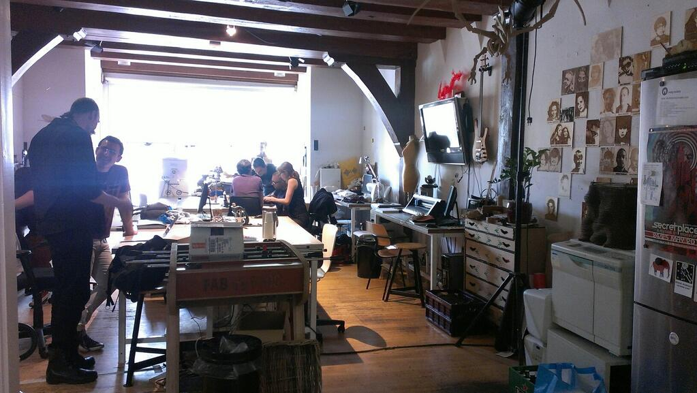
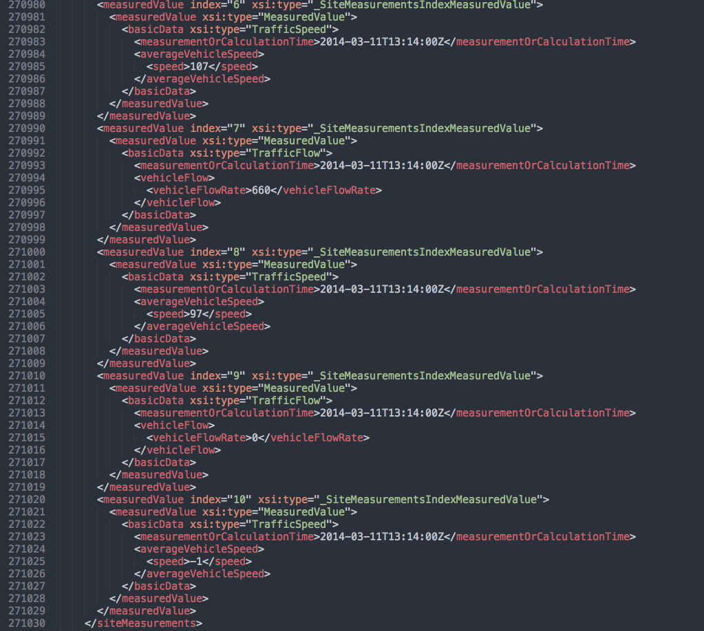
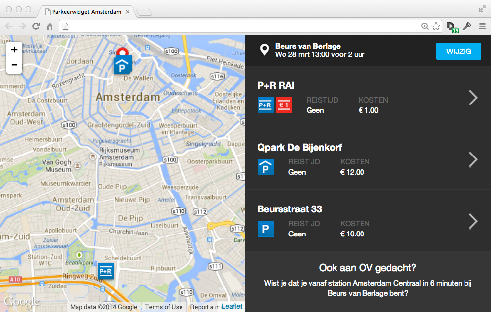
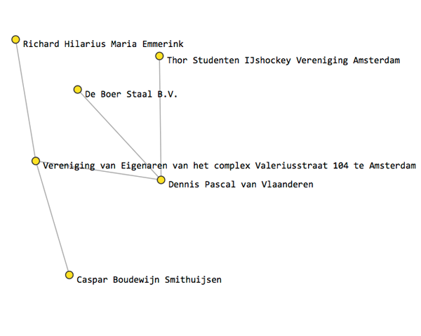

Open Data

Waag Society
Anatomische Les
Fablab Amsterdam
Fairphone
Prototyping

Fairphone
Wat is Open Data?
Wat kan je doen als je de volgende open data zou hebben...
Toeristische evenementen, Toegangsprijzen, openingstijden?
Beschikbaarheid en prijzen van parkeerplaatsen?
Handelsregister van Kamer van Koophandel?
Alle OV-haltes en vertrektijden?
Sensorgegevens in de hele stad?
Landkaart van de heel Nederland?
Is deze Open Data beschikbaar?
En zo ja, hoe?
| ★ | Data online, open licentie |
| ★★ | Gestructureerde data |
| ★★★ | Open formaat |
| ★★★★ | URI's ter identificatie |
| ★★★★★ | Links met andere data |

LOD cloud
Open data - Picnic
Open data - Picnic

Open data - Picnic
Open data - Picnic
Open data - Picnic

Open data - Picnic

Data portal
Different silos ● not linked

Different file formats
404 - not found

Different data models & field names
Different data models & field names

Amsterdam Central Station

Wikipedia

DBpedia

OpenStreetMap

Cultural Heritage Site

GVB
Data uit verschillende bronnen, in verschillende formaten
Veel data nog niet open...
Kadaster ● Kamer van Koophandel ● Openbaar vervoer
CitySDK
●
City Service Development Kit

Interoperability (1)
Interoperability (2)
Welke scholen zijn er in de buurt? ●
Welke school is de beste? ●
Hoe kan ik er veilig komen?
Data beschikbaar, maar niet op één plek
CitySDK - uniforme API's voor steden
23 partners
8 countries
8 cities
CitySDK cities
Interoperability (3)

Concept (1)
Concept (2)

Concept (3)
Wat kan je doen als je de volgende open data zou hebben...
Toeristische evenementen, Toegangsprijzen, openingstijden?
Arts Holland
Arts Holland

Arts Holland - API

Arts Holland - Map
Tourism API apps

Tourism API apps
Beschikbaarheid en prijzen van parkeerplaatsen?
Parking widget
Handelsregister van Kamer van Koophandel?
Handelsregister
Handelsregister
Handelsregister
Handelsregister
Alle OV-haltes en vertrektijden?
GTFS
Portland
Google Maps
OpenTripPlanner
OpenTripPlanner

GTFS data example
Sensorgegevens in de hele stad?

SmartCitizenKit

SmartCitizenKit - Website

SmartCitizenKit - CitySDK LD API
Landkaart van de heel Nederland?

OpenStreetMap

OpenStreetMap

Haarlem

Westland
Staphorst
Alles combineren!

OpenTripPlanner Analyst

City Dashboard